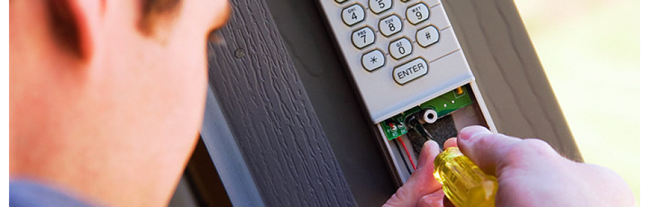

Kokybiškai atliekame garantinę ir pogarantinę techninę priežiūrą:
- Apsaugos sistemoms
- Vaizdo stebėjimo sistemoms
- Priešgaisrinės apsaugos sistemoms
- Kompiuteriniams, telefoniniams tinklams
- Automatikai
- Garso sistemoms
- Žaibosauga
Šioms sistemoms techninę priežiūrą atliekame vieną arba du kartus per
metus. Į techninės priežiūros darbus įeina:
- atsakingų žmonių mokymas,
- kaip naudotis sistemomis;
- sistemos būklės įvertinimas;
- sistemos gedimų šalinimas (jei tokių aptinkame);
-
tolimesnės rekomendacijos dėl remonto, programavimo,
perprogramavimo, naudojimosi sistemomis;
- gedimų registravimas 24 val. per parą.
Esant poreikiui ar būtinybei:
- Mokome atsakingus žmones naudotis sistemomis;
-
Pateikiame naujas vartotojo instrukcijas (aiškiai suprantamas,
lietuvių kalba).